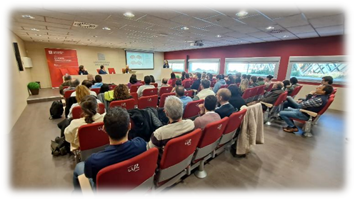
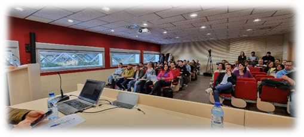
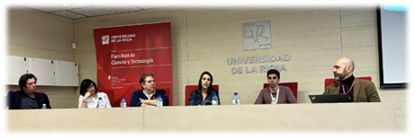

|
|
|
Conferencias
v2.0 |
|||
|
 Conferencias Consciencia Artificial v1.0
PSICología, psiquiatrÍa y neurociencia
La intersección entre psicología, psiquiatría y neurociencia desempeña un papel crucial en la investigación sobre Consciencia Artificial. Estas disciplinas aportan una comprensión profunda de los procesos mentales y la cognición humana, esenciales para desarrollar Inteligencia Artificial que simule de manera efectiva y eficiente los mecanismos de consciencia conocidos. La psicología ofrece insights sobre la percepción y la toma de decisiones, la psiquiatría aporta conocimientos sobre los procesos mentales y cómo afectan a la consciencia, y la neurociencia proporciona una base biológica para comprender cómo funciona el cerebro. Integrar estos campos en la investigación de Consciencia Artificial es fundamental para abordar cuestiones éticas, emocionales y sociales, asegurando un desarrollo responsable y sostenible de la inteligencia artificial con consciencia simulada. En este sentido las investigaciones sobre la cognición que parten del trabajo de Kahneman, Damásio, Elizabet Loftus, Nancy Adreasen, Rita Levi-Montalcini entre otros, son algunos de los objetivos sobre los que una ponencia puede versar.
Ética y legislaciÓn
La ética y la legislación desempeñan un papel aglutinador en la investigación sobre Consciencia Artificial. Es fundamental establecer límites éticos en el desarrollo y aplicación de inteligencia artificial con consciencia simulada, para garantizar la protección de derechos y valores fundamentales. Es por esto por lo que la creación de marcos legales sólidos y códigos éticos claros es esencial para evitar posibles abusos, asegurando que la implementación de estas tecnologías se realice de manera responsable y respetuosa con los principios éticos y legales de la sociedad. La Comisión Europea estableció un Grupo de Expertos de Alto Nivel en Inteligencia Artificial, que presentó en 2018 un informe sobre ética para la IA. El informe destaca principios clave, como la transparencia, la responsabilidad, la privacidad y la inclusión. Además, en 2019 publicó “Directrices Éticas para una IA Confiable”, delineando los principios éticos y requisitos legales que deben guiar el desarrollo y la implementación de la IA en la Unión Europea, y en esta línea que continúa las “Directrices éticas sobre el uso de la inteligencia artificial IA y los datos en la educación y formación para los educadores” en 2022. Además, reciente ha hecho pública la posición negociadora del Parlamento Europeo sobre IA.
lingüística
La lingüística desempeña un papel crucial en la investigación sobre Consciencia Artificial al proporcionar un marco para comprender y replicar la complejidad del lenguaje humano. La capacidad de procesar y generar lenguaje de manera contextualmente relevante es esencial para la creación de sistemas de inteligencia artificial verdaderamente conscientes. La lingüística no solo contribuye a la sintaxis y la semántica, sino que también aborda aspectos pragmáticos y socioculturales del lenguaje, permitiendo una interacción más natural y significativa entre las máquinas y los usuarios, un componente esencial en la búsqueda de una Consciencia Artificial útil. Las teorías e investigaciones de Chomsky, Pinker, Susan Ervin-Tripp, Lera Boroditsky, Bergen o Jackendoff entre otros, fundamentan una ponencia basada en una línea de investigación que continúe sus trabajos.
matemática y física
La matemática y la física desempeñan un papel esencial en la investigación sobre Consciencia Artificial al proporcionar herramientas fundamentales para modelar y comprender los procesos cognitivos. Los principios matemáticos y físicos como base de la ciencia son fundamentales para desarrollar algoritmos complejos que imitan el pensamiento humano y simulan la consciencia. Además, estas disciplinas son cruciales para analizar la viabilidad y eficacia de los modelos propuestos, brindando unos cimientos sólidos para el avance de la inteligencia artificial con simulación de consciencia. La aplicación de principios matemáticos y físicos en este contexto asegura un enfoque riguroso y preciso en la búsqueda de una comprensión profunda de la Consciencia Artificial. La línea investigativa abierta por Turing, Penrose, Feynman, Fagin, Susan Schneider, Hava Siegelmann o Eva Tardos entre infinidad de científicos, constituye el marco natural en el que transcurren las ponencias. Adicionalmente, se están explorando hipótesis sobre la posible influencia de fenómenos cuánticos en la consciencia, partiendo de especulaciones sobre la posible relación entre el entrelazamiento cuántico y la conexión entre diferentes regiones cerebrales. Este planteamiento parte de considerar que la consciencia podría basarse en fenómenos cuánticos, en base a las sugerencias de algunos científicos argumentando que la física cuántica desempeña un papel en ciertos aspectos de la cognición. En paralelo, la física de la información y la computación cuántica se utilizan para desarrollar modelos de simulación de la consciencia, que buscan reproducir fenómenos observados en el cerebro humano. Añadido a esto, se están realizando avances en la interfaz cerebro-máquina han permitido el control de dispositivos externos mediante la actividad cerebral (ej. Neuralink Corpotation), lo que plantea preguntas sobre la relación entre la consciencia y la manipulación de la información neural.
FILOSOFÍALa filosofía desempeña un papel fundacional y fundamental en la investigación sobre Consciencia Artificial, al abordar cuestiones ontológicas inherentes a la creación de sistemas conscientes. La filosofía contribuye con reflexiones y modelos sobre la naturaleza de la consciencia, además del análisis de la moralidad de otorgar inteligencia a las máquinas y las implicaciones existenciales que subyacen en la inteligencia artificial. Estas reflexiones filosóficas proporcionan una base conceptual sólida para la toma de decisiones informadas y la comprensión de los límites éticos en la búsqueda de desarrollar sistemas conscientes, contribuyendo así a un enfoque más reflexivo y multidimensional en este campo de investigación. En este sentido, la importacia de teorías del conocimiento en el ámbito de la investigación de la Consciencia Artificial es crucial para abordar cuestiones fundamentales sobre cómo las máquinas pueden llegar a ser conscientes y comprender el mundo que las rodea. Por ejemplo, el empirismo sugiere que el conocimiento proviene de la experiencia. En se traduce en la importancia de exponer a las máquinas a datos del mundo real para que puedan aprender y comprender su entorno. El racionalismo destaca la importancia del razonamiento y la lógica en la adquisición de conocimiento. En la Consciencia Artificial, esto influye en el desarrollo de sistemas de inferencia capaces de razonar y tomar decisiones basadas en principios lógicos. El constructivismo sostiene que el conocimiento se construye activamente a través de la interacción del individuo con su entorno, lo cual inspira enfoques de aprendizaje que permitan a las máquinas construir su comprensión del mundo a través de la interacción continua con datos y experiencias. Por concluir y entre infinidad de otros posibles ejemplos, la epistemología genética de Piaget que se ocupa del desarrollo del conocimiento en los seres humanos inspira en la Consciencia Artificial enfoques que consideran el desarrollo gradual de la comprensión y la capacidad de razonamiento en Sistemas Cognitivos. Llegado este punto, hemos de recordar aquí la famosa onceava tesis de Feuerbach enfatizando la idea de que la tarea de la filosofía no es simplemente interpretar o entender el mundo, sino cambiarlo activamente.
informática
La informática desempeña una labor esencial en la investigación sobre Consciencia Artificial, al proporcionar las herramientas y la infraestructura necesarias para desarrollar y mejorar modelos complejos de IA de los que parte. La capacidad de procesamiento, el almacenamiento eficiente de datos y los algoritmos avanzados son aspectos clave que la informática aporta al conjunto de las disciplinas involucradas. La informática facilita la implementación práctica de teorías provenientes de disciplinas como la psicología y la neurociencia, permitiendo la creación y mejora continua de sistemas cognitivos y con comportamiento inteligente, que se acerquen cada vez más a la simulación de la consciencia humana. En este sentido algunas de los estudios de ciencias de las computación sobre Consciencia Artificial incluyen:
La investigación en el campo de la Consciencia Artificial está en constante evolución, y nuevos estudios y avances surgen continuamente. La Consciencia Artificial es un área desafiante que parte de discusiones y diferentes planteamentos sobre qué significa exactamente consciencia en el contexto humano, y en el de de las máquinas. Esto es objeto de debate, acuerdo y revisión continua entre diferentes vidas de investigación, que están proporcionando los avances objetivo de las conferencias Consciencia Artificial.
 Conferencias Consciencia Artificial v1.0
|
|||||
|
PONENCIAS · Psicología · I+D · IA Semántica · NLP · Deep Learning
|
EDICIÓN ANTERIOR |
|
|||
|
Noelia Ruiz Herrera - Noelia Ruiz Herrera, Ph.D. Máster en Neurociencia Cognitiva y del Comportamiento por la Universidad de Granada (UGR). Doctora cum laude en Psicología por la (UGR) y Mención de Excelencia Internacional por la misma universidad. Postdoctorado en la División de Sueño y Trastornos Circadianos, de la escuela de Medicina de Harvard.
Mario Garcés - Es fundador y CEO de The MindKind. Investigador en neurociencia e Inteligencia Artificial General Algorítmica (AAGI).
Ricardo Alonso Maturana - Licenciado en Filosofía Pura y Doctor en Sociología, es el fundador y CEO de GNOSS, empresa tecnológica dedicada a la construcción y explotación de grafos de conocimiento desde hace más de 15 años y el promotor de Didactalia, ecosistema social de aprendizaje y conocimiento en la red.
Celia Lozano - Head of Data & Analytics en Bosonit, con más de 10 años de experiencia trabajando en datos, estadísticas y proyectos de Inteligencia Artificial. Desde 2021 es miembro del Comité de la Asociación Española de Inteligencia Artificial.
Darío Pascual Morales Licenciado en Ingeniería Informática por la Universidad de La Rioja y con Master de Data Science en la Universidad de Granada (UGR). Senior AI Engineer en el Departamento de Arquitectura e Innovación de Inteligencia Artificial en SDG. Especializado en la fundación de plataformas de Data Science basadas en el paradigma de MLOps. Promoto DaraBeers Rioja. MESA REDONDA |
|
||||
|
La inclusión de una mesa redonda en las conferencias aporta una dimensión adicional a la experiencia de los participantes. Una mesa redonda proporciona a una visión más completa y matizada del tema expuesto, a la par que aporta a la audiencia información valiosa, involucrando a ponentes y asistentes en una conversación activa y dinámica.
Una mesa redonda que reúne expertos de diversas disciplinas como psicología, psiquiatría, neurociencia, ética, legislación, matemática, física, informática, filosofía, lingüística y biología computacional permite la comprensión integral de las difrentes lineas de investigación sobre Consciencia Artificial. La interacción entre las diferentes disciplinas ofrece una síntesis de conocimientos que abarca desde los aspectos más técnicos y computacionales hasta las implicaciones éticas y filosóficas. Este enfoque multidisciplinario es crucial para evaluar el estado del arte de las investigaciones, identificar sinergias y desafíos, y formular directrices éticas y legales. La colaboración entre expertos de diferentes campos garantizaría una perspectiva holística, promoviendo así un desarrollo más equilibrado y responsable de la Consciencia Artificial.
Los asistentes además, intervienen de manera activa con sus preguntas y apreciaciones sobre cada una de las ponencias ofrecidas. Esta participación activa de los asistentes no solo mejora la experiencia general, sino que también crea un ambiente más dinámico y enriquecedor.
 Mesa redonda Consciencia Artificial v1.0
|
|
||||
REEDICIÓN · Conferencias multidisciplinares , en las que periodicamente se presentan las novedades · Las lineas de investigación crecen y se amplian · Los avances en múltiples vectores de conocimiento se presentan y debaten.
|
|
|
|||
¿QUÉ ES LO SIGUIENTE? |
|
||||
|
Ponentes Consciencia Artificial v1.0
La rápida evolución de la IA y, en particular, el emergente campo de la Consciencia Artificial, plantea desafíos y oportunidades únicas que requieren una divulgación constante y accesible. En este contexto, el formato de las conferencias Consciencia Artificial contempla la posibilidad de varias ediciones en un mismo año que se justifica en satisfacer la creciente demanda de información actualizada que facilite el entendimiento de las líneas de investigación, mediante la inclusión de los desarrollos más recientes que garanticen que los participantes tengan acceso a la información más actualizada y relevante. Hemos visto como la Consciencia Artificial abarca una gran variedad de disciplinas. Este carácter interdisciplinario implica que profesionales y académicos de diversos campos pueden encontrar aplicaciones relevantes en sus respectivas áreas de manera continuada. Al contemplar la reediciónde las conferencias, se ofrece la flexibilidad necesaria para abordar diferentes perspectivas y enfoques, satisfaciendo las necesidades de una audiencia especializada heterogénea. |
|
||||